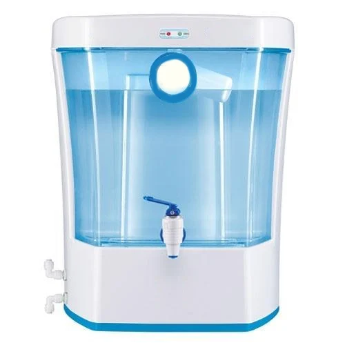
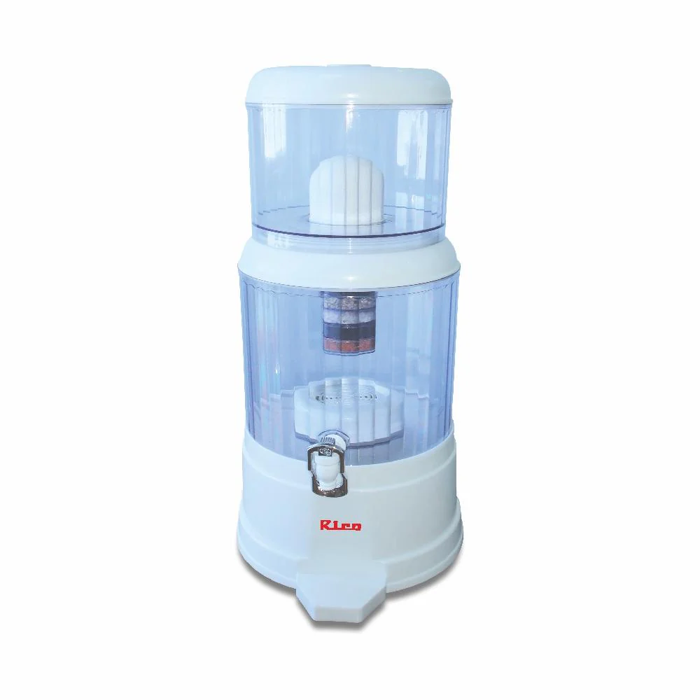

Main article: Point of use water filter Water purifier Point-of-use filters for home use include granular-activated carbon filters used for carbon filtering, depth filter, metallic alloy filters, microporous ceramic filters, carbon block resin, microfiltration and ultrafiltration membranes. Some filters use more than one filtration method. An example of this is a multi-barrier system. Jug filters can be used for small quantities of drinking water. Some kettles have built-in filters, primarily to reduce limescale build-up.
|  |
 |
4000 years ago, in India and China, Hindus devised the first drinking water standards. Hindus heated dirty water by boiling it and exposing it to sunlight or dipping it seven times in hot pieces of copper, then filtering it through earthen vessels and cooling it. This was an enlightened procedure to obtain sterilized drinking water as well as to keep it aesthetically pleasing. This method was directed at individuals and households rather than for use as a community water source. The Egyptians first discovered the principle of coagulation in water treatment after 1500 BC. They adapted a chemical called alum for the settling of suspended particles.[10]
Until the invention of the microscope, the existence of microscopic life was undiscovered. More than 200 years passed before the microscope was invented and the relationship between microorganisms and disease became clear. In the mid-19th century, cholera was proven to be transmitted by contaminated water. In the late 19th century, Louis Pasteur's theory of the particulate pathogen finally established a causal relationship between microorganisms and disease. Filtration as a method of water purification was established in the 18th century, and the first municipal water treatment plant was built in Scotland in 1832. However, the aesthetic value of water was important at the time, and effective water quality standards did not exist until the late 19th century.[10]
2,000 years ago, Mayan drinking water filtration systems used crystalline quartz and zeolite. Both minerals are used in modern water filtration. "The filters would have removed harmful microbes, nitrogen-rich compounds, heavy metals such as mercury and other toxins from the water".[11]